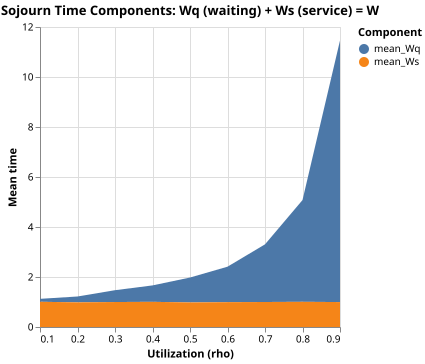

Sojourn Time
The sojourn time W is the total time a customer spends in the system from arrival to departure. It has two components: Wq, the time spent waiting for the server to become free, and Ws, the time spent in service.
For an M/M/1 queue with service rate μ, the mean sojourn time is W = 1 / (μ (1 - ρ)), where ρ is the utilization. The mean service time Ws = 1/μ stays constant as load increases; all the extra delay at high utilization comes from Wq growing without bound as ρ approaches 1.
The simulation runs a single M/M/1 queue at nine utilization levels from ρ = 0.1 to ρ = 0.9 and reports both components alongside the theoretical W and two independent estimates of L.
Source and Output
"""Example: measuring sojourn time components across utilization levels."""
import random
import statistics
from pathlib import Path
import altair as alt
import polars as pl
from prettytable import PrettyTable, TableStyle
from asimpy import Environment, Process, Resource
SEED = 192 # random seed for reproducibility
SIM_TIME = 20_000 # simulated time units per scenario
SERVICE_RATE = 1.0 # exponential service rate (mu); mean service time = 1/mu
SAMPLE_INTERVAL = 1 # sim-time units between Monitor samples
RHO_VALUES = [0.1, 0.2, 0.3, 0.4, 0.5, 0.6, 0.7, 0.8, 0.9] # utilization levels
CHART_PATH = Path(__file__).parent.parent / "pages" / "tutorial" / "14_sojourn.svg"
class Customer(Process):
def init(self, server, in_system, sojourn_times, wait_times):
self.server = server
self.in_system = in_system
self.sojourn_times = sojourn_times
self.wait_times = wait_times
async def run(self):
arrival = self.now
self.in_system[0] += 1
async with self.server:
service_start = self.now
await self.timeout(random.expovariate(SERVICE_RATE))
self.in_system[0] -= 1
self.sojourn_times.append(self.now - arrival)
self.wait_times.append(service_start - arrival)
class Arrivals(Process):
def init(self, rate, server, in_system, sojourn_times, wait_times):
self.rate = rate
self.server = server
self.in_system = in_system
self.sojourn_times = sojourn_times
self.wait_times = wait_times
async def run(self):
while True:
await self.timeout(random.expovariate(self.rate))
Customer(self._env, self.server, self.in_system, self.sojourn_times, self.wait_times)
class Monitor(Process):
def init(self, in_system, samples):
self.in_system = in_system
self.samples = samples
async def run(self):
while True:
self.samples.append(self.in_system[0])
await self.timeout(SAMPLE_INTERVAL)
def simulate(rho):
rate = rho * SERVICE_RATE
env = Environment()
server = Resource(env, capacity=1)
in_system = [0]
sojourn_times = []
wait_times = []
samples = []
Arrivals(env, rate, server, in_system, sojourn_times, wait_times)
Monitor(env, in_system, samples)
env.run(until=SIM_TIME)
mean_W = statistics.mean(sojourn_times)
mean_Wq = statistics.mean(wait_times)
mean_Ws = mean_W - mean_Wq
mean_L = statistics.mean(samples)
lam = len(sojourn_times) / SIM_TIME
theory_W = 1.0 / (SERVICE_RATE * (1.0 - rho))
return {
"rho": rho,
"mean_Wq": round(mean_Wq, 4),
"mean_Ws": round(mean_Ws, 4),
"mean_W": round(mean_W, 4),
"theory_W": round(theory_W, 4),
"L_sampled": round(mean_L, 4),
"L_little": round(lam * mean_W, 4),
}
def main():
random.seed(SEED)
rows = [simulate(rho) for rho in RHO_VALUES]
table = PrettyTable(list(rows[0].keys()))
for row in rows:
table.add_row(list(row.values()))
table.set_style(TableStyle.MARKDOWN)
print(table)
df = pl.DataFrame(rows)
long_df = df.select(["rho", "mean_Wq", "mean_Ws"]).unpivot(
on=["mean_Wq", "mean_Ws"],
index="rho",
variable_name="component",
value_name="time",
)
chart = (
alt.Chart(long_df)
.mark_area()
.encode(
x=alt.X("rho:Q", title="Utilization (rho)"),
y=alt.Y("time:Q", title="Mean time", stack="zero"),
color=alt.Color("component:N", title="Component"),
)
.properties(title="Sojourn Time Components: Wq (waiting) + Ws (service) = W")
)
chart.save(str(CHART_PATH))
if __name__ == "__main__":
main()
| rho | mean_Wq | mean_Ws | mean_W | theory_W | L_sampled | L_little |
|---|---|---|---|---|---|---|
| 0.1 | 0.1181 | 1.0085 | 1.1266 | 1.1111 | 0.113 | 0.1124 |
| 0.2 | 0.234 | 0.9866 | 1.2206 | 1.25 | 0.241 | 0.2389 |
| 0.3 | 0.4738 | 0.9989 | 1.4727 | 1.4286 | 0.4478 | 0.449 |
| 0.4 | 0.6573 | 1.0066 | 1.6639 | 1.6667 | 0.6658 | 0.6645 |
| 0.5 | 0.9963 | 0.9831 | 1.9795 | 2.0 | 0.995 | 0.9953 |
| 0.6 | 1.4193 | 0.9935 | 2.4128 | 2.5 | 1.4549 | 1.455 |
| 0.7 | 2.3067 | 1.0 | 3.3067 | 3.3333 | 2.2979 | 2.3008 |
| 0.8 | 4.0708 | 1.007 | 5.0778 | 5.0 | 4.0842 | 4.0841 |
| 0.9 | 10.4621 | 0.9976 | 11.4597 | 10.0 | 10.4234 | 10.4169 |
Chart

The stacked area shows how the waiting component Wq grows steeply at high utilization while the service component Ws remains roughly constant.
Key Points
-
Customerrecordsservice_start = self.nowinside theasync with self.server:block. That line executes only after the resource is acquired, soservice_start - arrivalis the pure waiting time Wq. -
mean_Ws = mean_W - mean_Wqis derived rather than measured directly; it equals the mean of the individual service times. -
theory_W = 1.0 / (SERVICE_RATE * (1.0 - rho))gives the M/M/1 formula. The simulatedmean_Wtracks it closely at low utilization and diverges slightly at ρ = 0.9, where variance is high and 20 000 time units is a shorter run relative to the long tails. -
L_sampledandL_littleshould agree by Little's Law; the table confirms they do across all utilization levels.
Check for Understanding
At ρ = 0.9, mean_W is noticeably higher than theory_W.
What property of the exponential distribution causes the simulated mean
to be a noisy estimate at high utilization, and how would increasing
SIM_TIME change the gap?